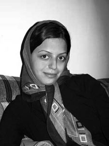

پذيرش > سایت نوشته ها > تولد، زندگي و تحصيل در يک شهر
 طرح الزام دانشگاه ها به پذيرش دختران در دانشگاه هاي محل سکونت شان طرح الزام دانشگاه ها به پذيرش دختران در دانشگاه هاي محل سکونت شان

 تولد، زندگي و تحصيل در يک شهر تولد، زندگي و تحصيل در يک شهر
20 مهر 1387 - اعتماد / زينب پيغمبرزاده - نسخه قابل چاپ
در هفته آخر شهريور هيات رئيسه مجلس از وصول طرح «الزام دانشگاه ها به پذيرش دختران در دانشگاه هاي محل سکونت شان» خبر داد. در صورت تصويب اين طرح که در کميسيون آموزش مجلس در حال بررسي است، سازمان سنجش و دانشگاه آزاد اسلامي موظف خواهند بود سياست هايي اتخاذ کنند که حتي الامکان داوطلبان دختر در نزديکي محل سکونت شان قبول شوند. به گفته نمايندگان اين طرح در کنکور سال 88 اعمال خواهد شد.
طرح جامع پذيرش بومي دانشگاه ها در مجلس
عزت الله دهقان عضو کميسيون آموزش مجلس در گفت وگو با روزنامه خراسان درباره دلايل نمايندگان براي ارائه اين طرح مي گويد؛ «پس از اعلام نتايج کنکور در 15 شهريورماه، شاهد موجي از اعتراض ها و تجمع بسياري از داوطلبان کنکور در مقابل سازمان سنجش و مجلس بوديم که درصد بالايي از اين اعتراض ها ناشي از محروميت داوطلبان از پذيرش در دانشگاه هاي معتبر به دليل سياست بومي گزيني بود. اما به دنبال فراخوانده شدن وزير علوم و مسوولان سازمان سنجش به مجلس، با افزايش 10 درصد ظرفيت پذيرش در برخي رشته ها و دانشگاه اين غائله خاتمه يافت اما در حال حاضر تلاش ها در مجلس بر اين است که در سال هاي بعدي شاهد تکرار چنين حوادثي که نتيجه آن تضييع حقوق و محروميت داوطلبان شهرستاني از حضور در دانشگاه هاي معتبر و ملي است، نباشيم. در همين راستا طرح جامع پذيرش بومي در دانشگاه که با هدف اصلاح مصوبه بومي گزيني شوراي عالي انقلاب فرهنگي تدوين شده در کميسيون آموزش در حال بررسي است و الزام دانشگاه ها به پذيرش دختران در دانشگاه هاي محل سکونت شان نيز از جمله اين طرح ها است.»
به گفته اين نماينده مجلس در اين طرح آمده است؛ «به شرط افزايش امکانات دانشگاهي در تمامي استان ها و شهرها، دانشگاه ها ملزم هستند دانشجويان دختر را به صورت بومي و در شهرهاي محل سکونت شان پذيرش کنند که البته دانشگاه هاي معتبر و ملي از اين مساله مستثني مي شوند.» وي در ادامه در توضيح ديگر دلايل پيشنهاد اين طرح توسط نمايندگان افزود؛ « برخي از گزارش ها حاکي از آن است که درصد کمي از دانشجويان دختر که در شهرهاي ديگري پذيرفته شده اند، به دليل مخالفت خانواده يا به دليل نبود و کمبود خوابگاه دانشجويي در آن شهر، از تحصيل در دانشگاه انصراف داده اند.» عليرضا سليمي از اعضاي کميسيون آموزش مجلس نيز با اشاره به مشکلات رفت و آمد دختران دانشجو و همچنين اعتراضات صورت گرفته به طرح بومي گزيني، به مهر مي گويد؛ «اين مساله منجر به اين شد که جمعي از نمايندگان مجلس طرحي را ارائه کنند تا فوايد قانون قبلي را داشته باشد اما مضرات آن را نداشته باشد.» علي کريمي فيروزجايي از ديگر اعضاي اين کميسيون هم در مصاحبه با همين خبرگزاري، با اشاره به اينکه دانشجويان اعم از دختر و پسر به نمايندگان مجلس مراجعه مي کنند و خواستار تسهيل در امور نقل و انتقال محل تحصيل مي شوند، تبعات فرهنگي و فشارهاي اقتصادي را که در نتيجه جابه جايي فرزندان از استان محل سکونت به استان هاي ديگر به خانواده ها وارد مي شود، از دلايل ارائه اين طرح مي داند. وي در ادامه تاکيد مي کند؛ «اگر قرار است به يک شهروند استان کهکيلويه و بويراحمد حق انتخاب دانشگاه هاي معتبر در تهران، اصفهان و شيراز را ندهيم بايد در دانشگاه هاي آن استان فرصت هايي را ايجاد کنيم تا داوطلب آن استان بتواند از دانشگاهي در استان خود بهره مند شود که هم از نظر کمي و هم از نظر کيفي توسعه يافته است.»
تحصيل دور از خانواده؛ فرصتي براي کسب استقلال
اما آيا نمايندگان در اين ميان نظر داوطلبان و خانواده هايشان را هم جويا شده اند؟ دختران و خانواده هايشان درباره ادامه تحصيل در شهري ديگر چه نظري دارند؟ به آن به ديد يک فرصت نگاه مي کنند يا يک مشکل؟ دختران ترجيح مي دهند در رشته مورد علاقه شان در شهري ديگر تحصيل کنند يا در رشته يي که به آن علاقه يي ندارند، در شهر خودشان درس بخوانند؟
شيدا اهل مهاباد است و چهار سال پيش در رشته مددکاري اجتماعي از دانشگاه علامه طباطبايي فارغ التحصيل شده است. او دوران تحصيلش را در تهران چنين توصيف مي کند؛ «بهترين تجربه هايم را در خوابگاه کسب کردم. تجربه هاي ارزشمندي که با سال ها زندگي در شهرستان هم نمي توانستم به دست بياورم مثل تجربه زندگي گروهي و استقلال.» وقتي نظر خانواده اش را مي پرسم، مي گويد؛ «مادرم با وجود آنکه تحصيلات چنداني ندارد، هميشه مي خواست در شهر ديگري ادامه تحصيل دهم تا بتوانم زندگي جديدي را تجربه کنم. او مي گفت؛ «هيچ وقت نتوانستم از خودم فراتر روم، چرا که آدم هاي اطرافم همه شبيه خودم بودند و تجربه جديدي نداشتيم که به يکديگر منتقل کنيم.» از شيدا مي پرسم؛ «خانواده هاي کرد درباره ادامه تحصيل دختران شان در شهرهاي دور چه نظري دارند؟» او که پس از اتمام تحصيلاتش در تهران به عنوان مددکار مشغول به کار شده و دور از خانواده زندگي مي کند، پاسخ مي دهد؛ «اکثر خانواده ها به راحتي مي پذيرند که دخترشان براي ادامه تحصيل به شهر ديگري برود. هرچند خانواده هايي هم هستند که ديدگاه هاي سنتي دارند يا مي ترسند دخترشان با مشکل مواجه شود. البته در بسياري از موارد دختران موفق مي شوند خانواده هايشان را راضي کنند. در دوره جواني براي افراد مهم است که زندگي مستقلي را تجربه کنند و تحصيل در شهري ديگر به آنها کمک مي کند زودتر مستقل شوند. به قول مادرم دخترها اگر در خانه بمانند مثل گياهي که به جايي تکيه داده باشد ضعيف مي مانند، اما وقتي از خانواده جدا مي شوند، ياد مي گيرند روي پاي خودشان بايستند.»
فاطمه 22 ساله که در قم بزرگ شده، درباره دوره تحصيلش در رشت مي گويد؛ «با وجود اينکه از ابتدا پدرم علاقه مند بود در شهري نزديک درس بخوانم، خودم دوست داشتم در شهري قبول شوم که از خانواده ام فاصله داشته باشم و فرصت کنم مستقل شوم. از اين لحاظ به رشت آمدن برايم تجربه خوبي بود. البته پدرم همواره مشوق ما براي ادامه تحصيل بود. وقتي دبيرستان مي رفتيم او به من و خواهرم مي گفت؛ دختران اگر تحصيلات دانشگاهي نداشته باشند، تا آخر عمر به ديگران وابسته مي مانند، اما پسران حتي اگر درس هم نخوانند باز هم مي توانند در جامعه به جايي برسند.» او که اکنون پس از اتمام تحصيلاتش در رشته شهرسازي، با همسرش در رشت زندگي مي کند، ادامه مي دهد؛ «بيشتر خانواده هاي قمي مايل اند دختران شان در شهرهاي اطراف درس بخوانند، به همين دليل برخي از دختراني که رتبه هايشان آنقدر خوب نيست که بتوانند در شهرهاي اطراف مثل تهران، در رشته مورد علاقه شان قبول شوند، ناچار مي شوند در رشته يي ادامه تحصيل دهند که به آن علاقه يي ندارند.» «دخترهاي شهرستاني که از خوابگاه ناراضي اند، چرا در شهر خودشان درس نمي خوانند؟» اين پرسش را بارها شنيده ام اما اين تنها شهرستاني ها نيستند که براي ادامه تحصيل به تهران مي آيند، بسياري از داوطلبان تهراني نيز براي آنکه بتوانند در رشته هاي پرطرفداري چون مهندسي، پزشکي يا حقوق ادامه تحصيل دهند به شهرهاي ديگر مي روند. گيسو اهل تهران است و در دانشگاه سهند تبريز تحصيل مي کند. او هنگام انتخاب رشته بيش از اينکه به فکر ماندن در کنار خانواده باشد، تلاش کرده است در رشته مورد علاقه اش پذيرفته شود. براي پدر و مادرش هم اعتبار علمي دانشگاه بيش از هر چيز اهميت داشته است. مي پرسم؛ «اکنون بعد از دو سال، چقدر از انتخابي که کرده يي راضي هستي؟» او که 20 ساله است، مي گويد؛ «تبريزي ها چندان دانشجويان فارس زبان را نمي پذيرند، اما من رشته تحصيلي ام را دوست دارم. مشکلات زندگي در خوابگاه سبب شد ياد بگيرم روي پاي خودم بايستم. من تنها فرزند خانواده ام هستم. والدينم اکنون از اينکه ياد گرفته ام مستقل باشم، راضي اند. پدرم معتقد است والدين بايد پرواز کردن را به فرزندان شان ياد دهند و بعد اجازه دهند بچه ها پرواز کنند. تحصيل در شهري دور از خانواده تنها امکان دختران ايراني براي تجربه زندگي مستقل است.» گروهي از داوطلبان هم براي ادامه تحصيل از شهرستان به شهرستان ديگري مي روند. زهرا جاني پور که خانواده اش در همدان سکونت دارد، فوق ديپلم اش را در ملاير شهري نزديک همدان خوانده و بعد براي گرفتن ليسانس محيط زيست به بيرجند رفته است. او در مورد ملاک هاي انتخاب رشته اش مي گويد؛ «دوست داشتم در يکي از شهرهاي بزرگ و در دانشگاهي معتبر تحصيل کنم اما رشته هم برايم اهميت زيادي داشت. بعد از اينکه فوق ديپلم ام را گرفتم مجبور شدم براي گرفتن ليسانس به دانشگاه بيرجند بروم، چرا که اين رشته فقط در دانشگاه هاي بيرجند و اردکان وجود داشت.» البته او سختي هاي تحصيل در شهري دور از خانواده را انکار نمي کند؛ «رفت و آمد از بيرجند تا همدان برايم کار آساني نبود. مسائلي مثل مزاحمت هميشه وجود دارد، چه در شهر خودت باشي، چه هزار کيلومتر از خانواده ات فاصله داشته باشي، چه صد کيلومتر. مهم اين است که دختران اعتماد به نفس دفاع از خودشان را داشته باشند و مردم و نيروهاي انتظامي هم از آنها حمايت کنند.» براي خانواده زهرا هم ادامه تحصيل او در رشته مورد علاقه اش بيش از هر چيز اهميت داشته است. آنها به دانشگاه به عنوان فرصتي براي ورود او به اجتماع نگاه کرده اند. زهرا معتقد است در اين چهار سال زندگي مستقل تجربه هاي زيادي به دست آورده است؛ تجربه هايي که در انتخاب همسر به او کمک کرده و سبب شده ياد بگيرد چگونه با همکاران و اطرافيانش تعامل درستي داشته باشد. زهرا که در حال حاضر با همسرش در تهران زندگي مي کند، موفق شده است در دانشگاه معتبر تربيت مدرس پذيرفته شود اما وزارت علوم از پذيرش او در اين دانشگاه خودداري مي کند، چرا که او جزء يکي از 17 دانشجوي سه ستاره کنکور 1385 است.
طرحي غيرقانوني و غيرعادلانه
محمدعلي دادخواه حقوقدان تصويب چنين قوانيني را به صراحت برخلاف قانون اساسي و معاهدات بين المللي دانسته و تاکيد مي کند؛ «در قانون اساسي برخورداري از امکانات تحصيلي به طور مساوي حق همه افراد ملت دانسته شده است.»
کاهش حضور زنان در عرصه عمومي
دکتر شهلا اعزازي جامعه شناس و رئيس گروه زنان انجمن جامعه شناسي ايران، هدف طراحان چنين طرح هايي را کاهش حضور زنان در عرصه عمومي مي داند اما معتقد است طراحان به هدف خود نمي رسند، چرا که دختران در هر حال در شهرهاي کوچک تر به دانشگاه خواهند رفت. او با ابراز تاسف از اجراي چنين طرح هايي مي افزايد؛ «بومي گزيني جنسيتي در کنار سهميه بندي جنسيتي، شانس دختران براي ورود به دانشگاه و در نتيجه ورود به بازار کار را کاهش مي دهد. اين در حالي است که دختران در مقايسه با پسران با موانع بيشتري براي اشتغال روبه رو هستند، چرا که سازمان هاي دولتي بيشتر مردان را استخدام مي کنند و قوانيني چون کار نيمه وقت زنان و افزايش مرخصي زايمان آنها نيز که در ظاهر به نفع زنان است، در واقع موجب کاهش تمايل کارفرمايان به استخدام آنان مي شوند. هرچند سهم زنان از بازار کار در حال افزايش است.» اين استاد دانشگاه علامه معتقد است؛ «دختران براي کسب اعتبار اجتماعي و گسترش آزادي شان به دانشگاه مي روند، البته آنها اميد دارند به موقعيت بهتري در بازار کار دست يابند. دختران با ديپلم دسترسي چنداني به بازار کار سالم ندارند.» وي در پاسخ به نمايندگاني که هدف طرح را کاهش آسيب هاي اجتماعي دانسته اند، مي گويد؛ «در هيچ جاي دنيا به قرباني ها نمي گويند در خانه بنشينند تا بزهکاران به راحتي بتوانند به کار خودشان ادامه دهند. دولت ها بايد با عوامل ايجادکننده آسيب ها مقابله کنند نه قربانيان آنها.»او همچنين مي پرسد؛ «با توجه به اين نکته که در شهرستان فرصت هاي شغلي بسيار کمي براي زنان تحصيلکرده دارد، آيا دختران پس از آنکه مطابق اين طرح در نزديکي محل سکونت والدين شان درس خواندند، در نهايت مجبور نخواهند بود براي اشتغال به شهرهاي بزرگي مثل تهران بيايند؟ در اين صورت آشنا نبودن اين دختران با زندگي در شهرهاي بزرگ، خود مسبب ايجاد مشکلات جديدي براي آنها و جامعه خواهد بود.» دکتر حسين قاضيان جامعه شناس و مترجم نيز معتقد است؛ «نمايندگان مجلس با طرح هايي چون بومي گزيني جنسيتي و سهميه بندي جنسيتي تنها به دنبال کاهش ورود دختران به دانشگاه نيستند، بلکه بيش از هر چيز مي کوشند مانع حضور آنها در عرصه عمومي شوند.»
وي با اشاره به اينکه نمايندگان مجلس در واکنش به اعتراض داوطلبان به مصوبه شوراي عالي انقلاب فرهنگي در خصوص بومي سازي دانشگاه، بدون طرح قبلي دست به ارائه چنين طرح زده اند، مي گويد؛ «وقتي طرح هايي که بر مبناي انبوهي از تلاش ها که نام نامي «کار کارشناسي» را هم بر پشت خود حمل مي کنند، تهيه مي شود و ناکارآمد از کار درمي آيد، معلوم نيست آخر و عاقبت اين جور طرح هاي شتابزده که معمولاً هم فقط هدف يا آرزويي کم وبيش مشخص در نظر دارند، چه جور از کار دربيايد چرا که طرح هايي که به اين شيوه تنظيم شوند، معمولاً به پيامدهاي آشکار، مثلاً تغيير ترکيب جنسيتي دانشگاه هاي بزرگ هم توجهي ندارند، چه رسد به پيامدهاي پنهان و ناخواسته از جمله پيامدهايش بر بازار کار و اشتغال.» دکتر قاضيان همچنين در پاسخ به استدلال نمايندگان مجلس در خصوص دشواري فراهم آوردن امکانات خوابگاهي براي دختران دانشجو مي پرسد؛ «آيا مي شود براي جبران ناکارآمدي نظام اجرايي، براي تهيه شرايط مطلوب و براي ادامه تحصيل دانشجويان، از جمله تدارک خوابگاه، به ويژه براي تسهيل ادامه تحصيل دانشجويان دختر، حق عده يي از آنها را زير پا گذاشت؟» اين جامعه شناس ورود دختران به دانشگاه را تلاش براي جست وجوي منابع جديد هويتي مي داند و مي افزايد؛ «دختران با اتکا به قدرت عامليت خود مي کوشند هويت فردايشان را با توسل به فرصت هاي امروز بسازند. يکي از مهم ترين اين فرصت ها در جامعه ما و حتي در سطح جهاني، آموزش، به ويژه آموزش عالي است. با ورود به آموزش عالي دختران مي توانند در سقف شيشه يي جهان مردانه اشتغال و ارتقاي اجتماعي، ترک هايي به وجود بياورند و خود را بالا بکشند.»
اعتراض فعالان دانشجويي
طي چند روز گذشته، کميسيون زنان تحکيم با پخش بروشور در سطح دانشگاه ها، اعتراض خود را به اين طرح اعلام کرده است. نسيم سرابندي از اعضاي اين تشکل دانشجويي با انتقاد از ارائه طرح هايي که هيچ پشتوانه تحقيقاتي و آموزشي ندارند، مي پرسد؛ «با توجه به اينکه نمايندگان يکي از دلايل ارائه طرح را تقاضاي مکرر دانشجويان دختر براي گرفتن انتقالي به محل سکونت شان عنوان کرده اند، چرا آمار تقاضاي انتقالي دختران در مقايسه با پسران اعلام نمي شود؟ چرا نگرش دختران و خانواده هايشان به تحصيل در شهرهاي ديگر بررسي نمي شود؟»
روزنامه اعتماد
ارسال به
بالاترین
،
توییتر
،
فریندفید
،
فیسبوک
در همين بخش :
 یک خبر تلخ؟ یک قانونشکنی؟ یک تصمیم بخشنامهای جدید؟ یک خبر تلخ؟ یک قانونشکنی؟ یک تصمیم بخشنامهای جدید؟
چرا بایست به سکسوالیته پرداخت؟ / نفیسه آزاد
آزارجنسی خانگی؛ «قربانی» نه، «نجات یافته»
زنان، بزرگترین بازندگان بهار عرب
سانسور از دیدگاه جنسیتی/الهه امانی
ديگر بخش ها :
طرح یک میلیون امضا
|
مقالات
|
سایت نوشته ها
|
اخبار
|
گزارش كمپين
|
گفت و گو
|
علیه سکوت
|
كوچه به كوچه
|
نامه های شما
|
گزارش ویژه
|
گفتگو با اعضا
|
ویژه سالگرد کمپین
|
تصویر برابری
|
دل آرام علی
|
تریبون
|
مقالات
|
تاریخ شفاهی
|
خارج از چارچوب
|
کتابخانه
|
درباره کمپین
|
کمپین در شهرها
|
کمپین در بند
|
صدای تغییر
|
ویژه 22 خرداد
|
لایحه حمایت از خانواده
|
گالری
|
عشا مومنی
|
امیر یعقوبعلی
|
خدیجه مقدم
|
راحله عسگری زاده و نسیم خسروی
|
پروین اردلان،جلوه جواهری، مریم حسین خواه، ناهید کشاورز
|
زینب پیغمبرزاده
|
سعیده امین، سارا ایمانیان، محبوبه حسین زاده، ناهید کشاورز و همایون نامی
|
احترام شادفر
|
نسیم سرابندی زاده،فاطمه دهدشتی
|
وبلاگ مهمان
|
پرونده خرم آباد
|
دستگیری ها
|
مریم مالک
|
پرستو اللهیاری
|
مهرنوش اعتمادی
|
سمیه رشیدی
|
Other Languages
|
همراهان
|
«فراخوان کمپین ده روز با بهاره هدایت»
| English
|